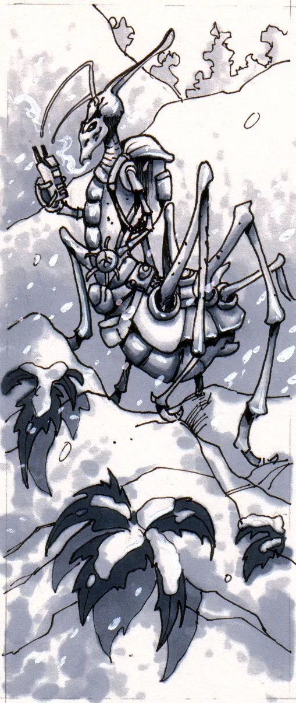
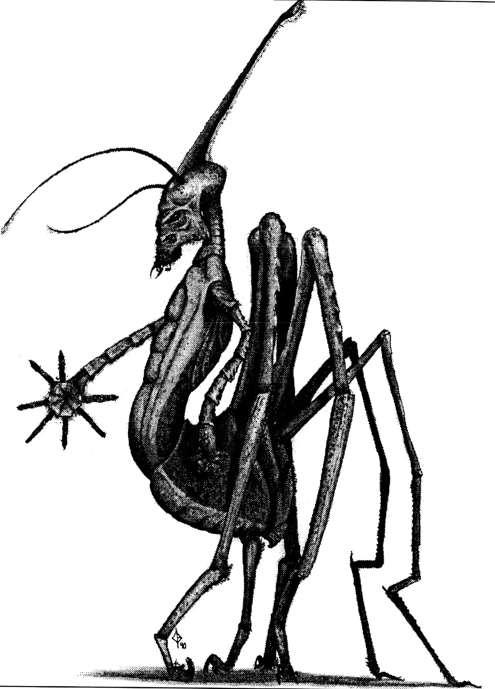
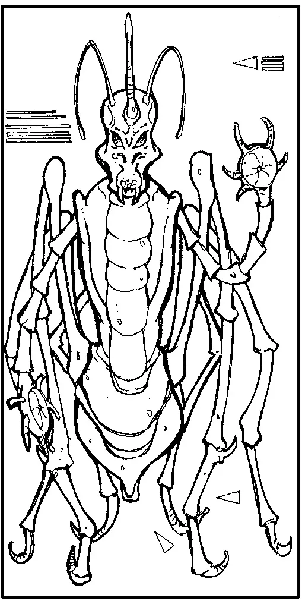
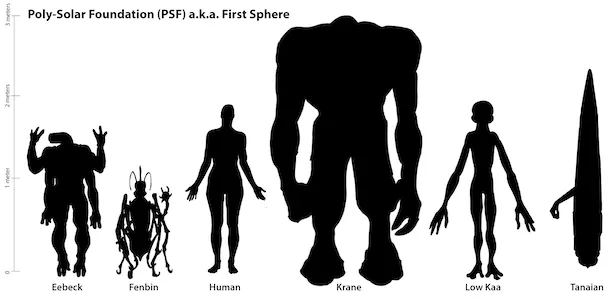

Physiology
Standing 0.9 meters tall to the top of the head or 1.3 to the tip of their horn, the average Fenbin weighs 35 kgs. Their exoskeleton is separated into three main segments the head, thorax, and abdomen, and there are two arms and six legs extending from the thorax and abdomen respectively. Covered in a hard external skeleton, that varies from brown to jet black, Fenbin bare a striking resemblance to spiders found on Earth. The central body is hung from six walking legs attached to the upper surface of the last segment, the abdomen. Each of these legs have eight segments, with the last two or three segments specialized into pad like feet on the front four legs. The feet are simply small pads which that take stability form single claws at their end. The two arms also have eight segments, but last segment in this case has developed a radial disk and segmented fingers. The seven fingers on each hand, each of which has multiple joints, allows very fine manipulation of the digits and therefore of objects they hold.
The elongated head, including the nasal horn, sits atop the neck and directly above the thorax. These two sections connect to the horizontally set abdomen, allowing easy flow of the legs while walking. This position also keeps the body erect and arms free for carrying and other tasks. A spinneret is located at the very end of the abdomen and is the lowest part of the central body. This spinneret can spin a continuous fibre able to support twice the body weight. The Upper surface of Fenbin bodies are coloured darkly while the underside is light. This served a role in concealment which remains only as a vestige of the past, but its other function is still present today.

The process of heat conduction and absorption is still a valuable source of energy to the Fenbin, especially during the summer. The opposing colours cause heat currents in fluid channels within the thorax and abdomen, and this action drives molecule sized thermal-pumps that make high energy molecules that can be stored or used as needed. The organs of their respiratory system are mainly located in the abdomen and open to the atmosphere through the first groove in the exoskeleton where the legs originate. This slit is surrounded by stiff hairs that are kept moist to clean the inhaled air of fine particles and dust. A long windpipe joins the central sack, in the abdomen, with the horn structure atop the head. This connection was used to provide air to the individual when hunting (they buried themselves and would pounce upon unsuspecting prey) but now it is used for purely ceremonial uses. Their small and delicately structured heart is placed low in the thorax, and indicative of the light gravity of Tabell. Their weak heart, by our standards, still manages efficient oxygenation of their iron based blood. Their digestive system is strictly that of a carnivore specially equipped for an insect diet. Females Fenbin are larger than males, and they choose their mates at the beginning of the great celebration. The sexual organs share a duct with the spinneret, and copulation results in the male passing of a package of sperm wrapped in spun fibres to the female. She can then store the sperm or use it to fertilize her eggs. Fertilization will yield 2-3 dozen eggs all wrapped in cocoon. After three months the young will emerge for the cocoon and begin a process of growth that will last for the first 11 years of life. During this time they remain in the city as they would not survive in the extreme environment away from the city.

Senses
Sight provides most of their sensory information, about sixty percent, but it is just ahead of smell ,another thirty percent and the other three senses equally weighted. Their eyes are compound in nature which provides a graining image at best, but the Fenbin have solved the problem by analyzing the image several times. The first layer of recognition senses flowing movement, the second - patterns, and the last interprets short quick movements. It is from this that a Fenbin can recognize objects and forms, with surprising accuracy. Their interpretation, however, is much shorter than a humans giving surprising response times. Their antennae every Fenbin has on the front of their forehead and are mainly touch organs, but they are also sensitive to odours. Covered in a soft skin and very short stiff hairs the antennae are the main organ of touch. The same type of material can be found on the pads at the end of each finger.

Speech
Fenbin speak with drawn-out clicks and pops, which are greatly accentuated when speaking other languages. Their horn is also used in speech in something akin to humming. The tone and volume of which gives an indication of the personality and demeanour of the individual.
Social / Culture
Due to their long winter, 11 standard earth years, they have developed a rather unique culture. They evolved as nomadic hunters and live most of their as such. They commonly associate in small groups but prefer to lead a solitary existence. This changes, however, during the year long summer celebration held in the capital city. In winter this city is populated by the young and the old members who would not survive the winter in the bitter cold. Instead they stay in the city, built on a huge crater, and warmed by geothermal energy. Their society was one of the first to use geothermal energy and the Fenbin take full advantage of the power source. They grow food and raise livestock in addition to heating their dwellings. Their nomadic lifestyle has also played a role in their political system. The Fenbin are ruled by a king chosen form the people, which sounds quite normal, but it is the method of selection that is uniquely Fenbin. As the winter releases its grip of the planet and spring dawns the population wakes and begins to journey to the capital. The first person to reach the city is greeted by the old king who releases his sovereignty. From that day on the first to come is the ruler and will remain as such for the next 12 years. This new king remains in the city through the winter and administers the government.
Special Abilities
Sex
Life Span
First Sphere - Racial Size Comparison Chart

---